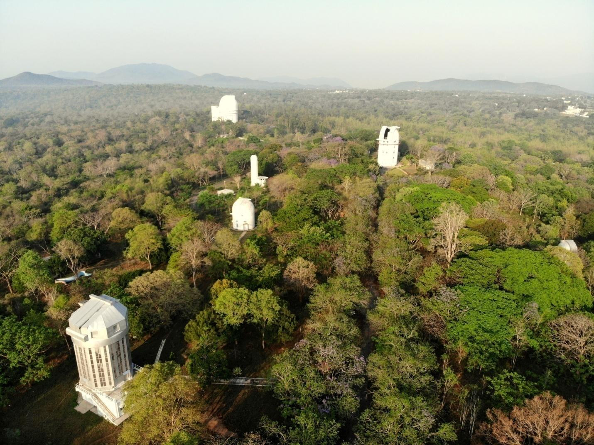
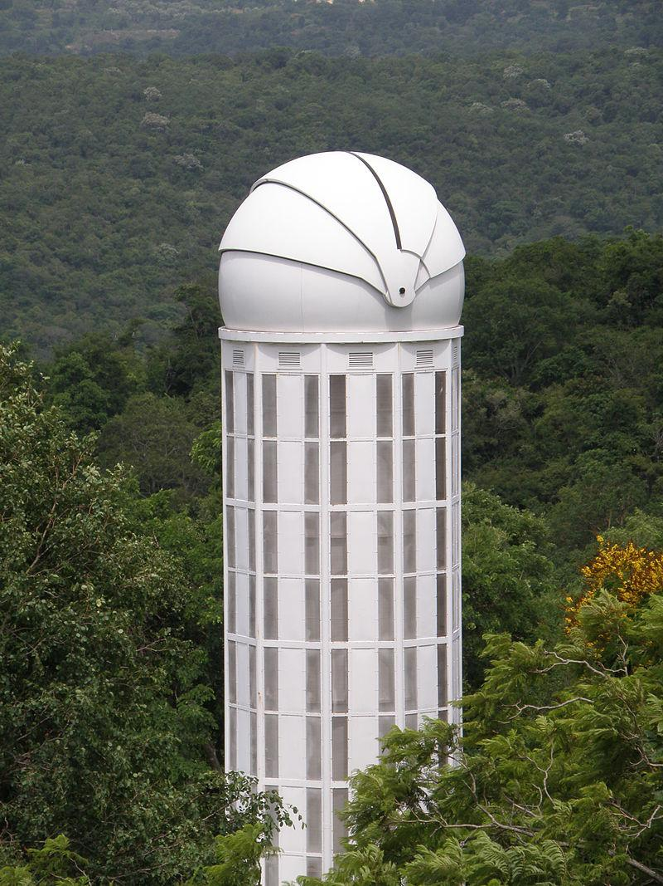
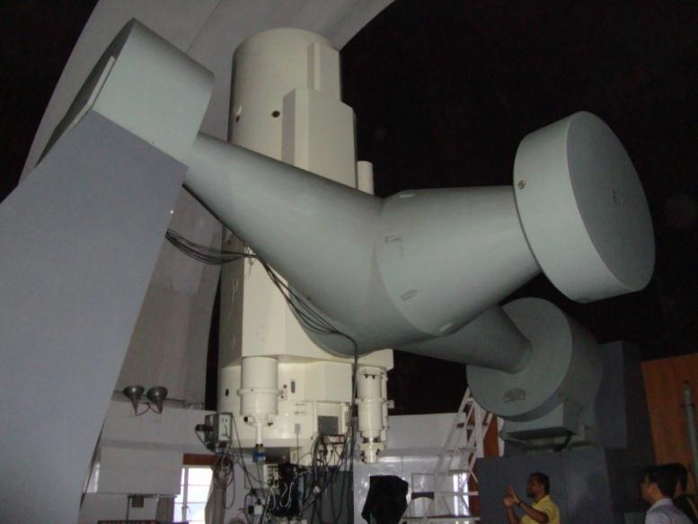
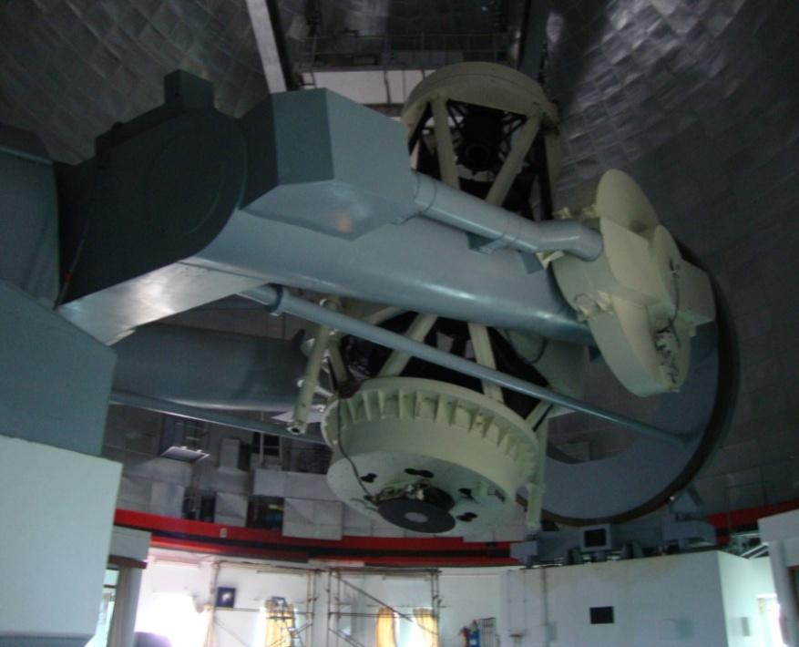
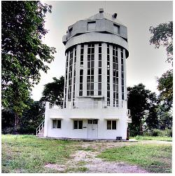
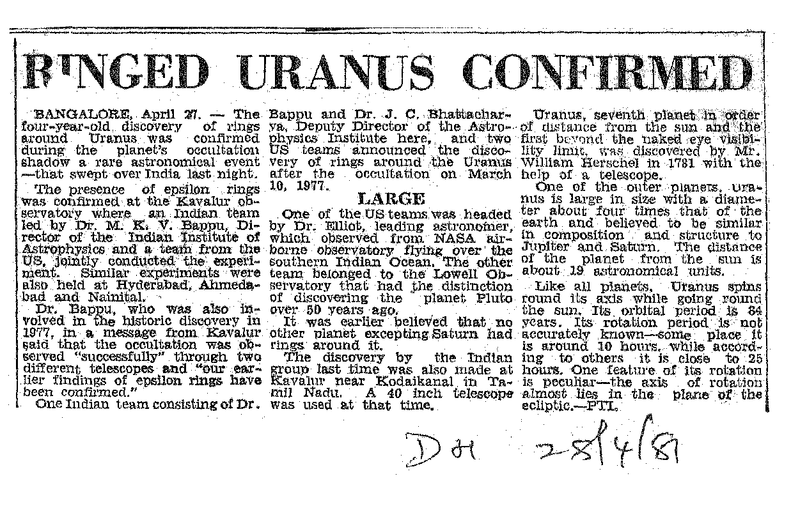
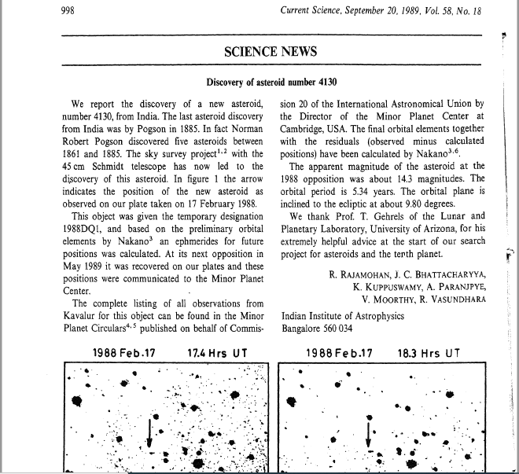
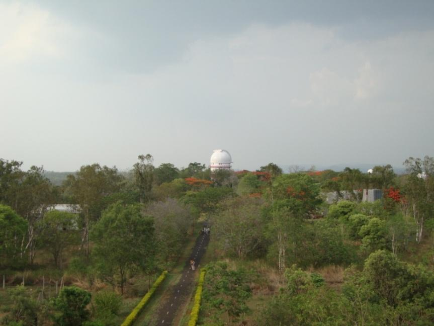
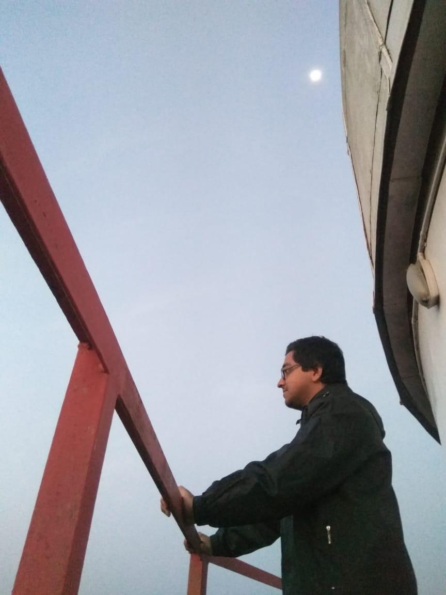
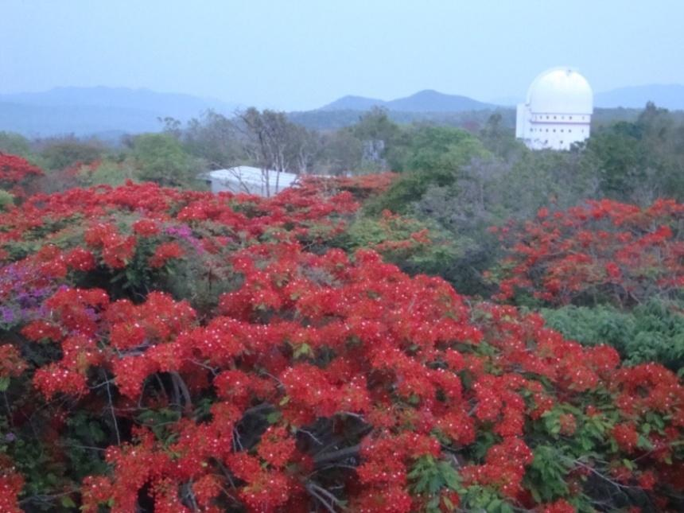

Vainu Bappu Observatory: the telescope town of India
A popular article describing the history and contributions of the Vainu Bappu Observatory: the telescope town of India.
My affair with the observatory is also highlighted in brief.
Introduction
Development of astronomy in ancient civilizations like during the times of Babylonians, Greeks, Egyptians, etc. took place due to some fundamental needs. Some of these needs were predicting seasons precisely which helped the ancient people in agriculture, using the night sky for proper navigation while travelling in uncharted areas without having any compass or clock, fixing the time for religious rites, etc. The earliest recorded astronomical observations date back to around 1600 BCE by Babylonians, much before the beginning of the Christian era. As time progressed, advancement in astronomy took place gradually. And in parallel to this, an overall progress in science and technology also occurred. History shows that studying astronomy has generated fundamental knowledge which has benefited every human being through ages. For example, the discovery of gravitation by Newton led to the understanding of planetary motion, which further laid the foundation of space technology – a boon of science which has benefited almost every human being. STD phone, mobile, internet, etc. are some of the results of the development of space technology.
However, invention of telescope and then studying the sky with bigger and better telescopes stationed in different astronomical observatories has greatly helped in this progress of astronomy since the past few hundred years. Encyclopedia Britannica defines an ‘astronomical observatory’ as “any structure containing telescopes and auxiliary instruments with which to observe celestial objects”. Like different other countries, India also possesses a long tradition of astronomy since ancient times [1].
Standing in the present day twenty-first century, India possesses several world-class research institutes and observatories carrying high-class researches in astronomy. One such important astronomical observatory situated in Indian soil is the Vainu Bappu Observatory, a place which one can truly be considered as the ‘Telescope City of India’.
Vainu Bappu Observatory (VBO): Telescope city of India
Around 200 km south-west of Chennai and 175 km south-east of Bangalore, in the Tirupathur district of the Indian state of Tamil Nadu lies the picturesque Javadi hills. Amidst this forested vegetation, near the neighborhoods of the village known as Kavalur and at an altitude of around 750 m (longitude 78° 49.6’ E; latitude 12° 34.6’ N) is located the Vainu Bappu Observatory (VBO) – one of the most important and active astronomical observatories in India and also in Asia. Situated away from light pollution and hustles-bustles of any big city, VBO is operated by the Indian Institute of Astrophysics (IIA), Bangalore.
Spread over an area of 40-hectare, this place attracts astronomers and researchers from across the country who are involved in studying celestial objects like stars, exoplanets, galaxies, etc. and also engineers, operators and other staff members who look after the proper functioning of the observatory. Apart from these busy and always cheerful people, VBO is filled with a variety of greenery of tropical region besides a number of medicinal plants. This is because the area is inside a protected forest. Monkeys are regular visitors among animals. And occasionally, appearance of some wildlife like deer, snakes and scorpions also greet the people working inside the campus.

Figure 1: Arial view of the Vainu Bappu Observatory located at Kavalur, Tamil Nadu (credit: P. Deshmukh, IIA, Bangalore)
However, the location of VBO provides advantages for night sky observation for astronomers. Apart from being reasonably away from city lights and industrial areas, this particular location was chosen in order to be closer to the Earth’s equator. Thus, coverage of both northern and southern hemispheres with equal ease becomes possible. Moreover, the longitudinal position of VBO is such that it is the only major astronomical facility between Australia and South Africa for observing the southern celestial objects [2].
Establishment of VBO
VBO traces its root far back in history. I shall discuss here in brief about how it was established. The first astronomical observatory in India was established at Madras (now Chennai) in 1786 by the East India Company “for promoting the knowledge of astronomy, geography and navigation in India.” It became the premier institute in India for works on the fundamental positions of stars during the 19th century. A catalogue of 11, 015 southern hemisphere stars was produced by the Madras observatory in 1843 under the guidance of T.G. Taylor, the then Director of the observatory. This is the famous Madras Catalogue.
Research in planetary science and stellar astronomy at the Madras Observatory reached its peak during the latter half of the 19th century, under the leadership of Norman Pogson, the Director of the observatory during 1861-1891. With his Indian assistants Pogson measured accurately the positions of around 50, 000 stars, discovered six variable stars and six asteroids during this period. In 1867, an Indian astronomer, Chintamani Ragoonathacharry (1838-1932), an assistant of Pogon, discovered a variable star– R Reticuli. This is probably the first recorded astronomical discovery by an Indian in the era of telescopes. Then, during the Total Solar Eclipse on August 18, 1868, the first spectroscopes were used to observe an eclipse event. So this eclipse became an important landmark which signaled the birth of solar physics in India.
After Pogson’s death (June 23, 1891), initiatives were taken to establish a separate solar physics observatory. Following the decision, Kodaikanal Solar Observatory was established at Kodaikanal, Tamilnadu within few years. It started working officially on April 1, 1899. However, due to the climate it was understood that Kodaikanal can provide very few nights available for observation. In 1945, the Government of India appointed a committee, chaired by the eminent physicist Meghnad Saha which started planning the post-war development of astronomy in India. Manali Kallat Vainu Bappu, a great visionary who took over as the director of the Kodaikanal Observatory in 1960 knew that Kodaikanal is not a suitable place for stellar research. However, establishing an observatory for stellar studies and optical astronomy was the dream of M.K. Vainu Bappu. So he led a search since 1962 for finding a suitable site in southern India for establishing an optical observatory. He succeeded in finding a sleepy little hamlet i.e. Kavalur in the Javadi Hills as a suitable site for establishing optical telescopes for observing celestial objects.
Observations began in 1968 with a 38 cm telescope made in the backyard of the Kodaikanal Observatory [3]. Then in 1971, a fully autonomous research institute was formed under complete funding from the Government of India, which came to be known as the Indian Institute of Astrophysics (IIA) [4]. Located in Bangalore, IIA took over the VBO facility henceforth.
Facilities at VBO [2, 5, 6]
Presently, VBO boosts of a number of sophisticated telescopes and asoociated instruments for looking at the heavens. The historical 1-m Carl Zeiss reflecting telescope, the 2.34-m Vainu Bappu Telescope, the recently installed 1.3-m J.C. Bhattacharya Telescope forms the major facilities. The first telescope was of 38 cm (15-inch) aperture, with which astronomical observations were started in 1968 at VBO. Later, a 75 cm (30-inch) telescope was completely designed and fabricated at the workshops of the IIA. It is still used for observations at VBO. Another 45-cm aperture joined the arsenal within few years. In recent years, one more telescope, known as the ‘DIMM Telescope’ also stands tall in the campus.

Figure 2: The DIMM Telescope at the VBO site (credit)
Then in 1972, a 1.02-m (primary mirror diameter) class reflecting telescope made by Carl Zeiss Jena was installed at VBO. Having the Ritchey-Chretien F/13 optical configuration, this remained as one of the primary facility for observing celestial objects for over a decade. It is working fully till now and is attached with two instruments for observations, a stellar optical polarimeter and the Universal Astronomical Grating Spectrograph (UAGS). Anyone of them can be used at a time attaching with the telescope.

Figure 3: The historic 1-m (40-inch) telescope at VBO (credit: author)
Later on January 6, 1986, another 2.34-m (93 inch) diameter reflecting telescope was inaugurated in the observatory. Completely designed and built in India, this telescope project was started by Vainu Bappu. However, he passed away in 1982 and could not see the successful installation and working of this dream telescope. On January 6, 1986, the observatory was renamed as the Vainu Bappu Observatory and the 2.3-m telescope as ‘Vainu Bappu Telescope’ (VBT) [6]. It remained as the largest telescope in Asia until a 3.6-meter telescope was set up at Devasthal, near Nainital, by ARIES. It is majorly used for deep sky observations including stars and galaxies currently using two instruments at prime focus. It is operated as a national facility and attracts proposals from all over the country and occasionally from abroad.
Later on January 6, 1986, another 2.34-m (93 inch) diameter reflecting telescope was inaugurated in the observatory. Completely designed and built in India, this telescope project was started by Vainu Bappu. However, he passed away in 1982 and could not see the successful installation and working of this dream telescope. On January 6, 1986, the observatory was renamed as the Vainu Bappu Observatory and the 2.3-m telescope as ‘Vainu Bappu Telescope’ (VBT) [6]. It remained as the largest telescope in Asia until a 3.6-meter telescope was set up at Devasthal, near Nainital, by ARIES. It is majorly used for deep sky observations including stars and galaxies currently using two instruments at prime focus. It is operated as a national facility and attracts proposals from all over the country and occasionally from abroad.

Figure 4: The 2.34-m Vainu Bappu Telescope (VBT) at VBO (credit: author)
Another recent addition to these existing facilities is the 1.3-m aperture J.C. Bhattacharya Telescope, popularly known as the JCBT. It was installed in April 2014 and was named after the ex-Director of VBO, Dr. Jagadish Chandra Bhattacharya. Possessing a Ritchey-Chretien F/8 optical configuration, JCBT has three instrument ports. The main port consists a 2k x 4k CCD system for direct imaging purpose.

Figure 5: The 1.3-m JCBT at the VBO campus (credit: https://www.iiap.res.in/vbo.htm)
Major discoveries and research highlights
Contributions of VBO in astronomy are immense. This included some major discoveries which are discussed below:
- The 1-m telescope started producing fruitful results just within few months after it began operation in January, 1972. In June, 1972, it discovered the presence of a thin atmosphere around Ganymede, the largest satellite of Jupiter [7].
- In March, 1977, rings of Uranus were discovered by J. C. Bhattacharya (Director of VBO after M. K. Vainu Bappu) and his colleagues while observing through the same telescope [8].

Figure 6: News on confirmation of the rings of Uranus published in Deccan Herald newspaper on April 28, 1981 (credit:http://prints.iiap.res.in/bitstream/handle/2248/1059/E7.2.pdf;jsessionid=F7FDBA92400FD589617ED58C49E0ED30?sequence=1)
- Then in 1984, the discovery of a thin outer ring around Saturn was reported by VBO using the same telescope [9].
- Another important discovery was made using the 45 cm Schmidt telescope. On February 17, 1988, a new minor planet was discovered by a team of six astronomers led by R. Rajamohan [10]. It was a part of a special search program for asteroids called ‘Project Kalki’. Later, this asteroid was named ‘4130 Ramanujan’ after the legendary Indian mathematician Srinivasa Ramanujan. This became the first discovery of an asteroid from the Indian soil in the 20th century.

Figure 7: Discovery of the asteroid Ramanujan published in Current Science journal in 1989 (credit:http://prints.iiap.res.in/bitstream/handle/2248/3975/Discovery%20of%20asteroid%20number%204130?sequence=3&isAllowed=y)
Another notable work performed from VBO was to survey the stars of the Large Magellanic Cloud (LMC) galaxy using ultraflow dispersion spectroscopy. Moreover, astronomers of IIA started observing the famous supernova of 1987, i.e. SN1987A in LMC within 48 hours of the discovery. Observing this supernova in details using both 1-m and the 75 cm telescopes, despite its low elevation in the southern sky, proved the importance of the geographic location of Kavalur. Apart from these major achievements, front-line research is carried out at VBO in present days also, using different focal plane instrument facilities. Research at VBO focuses in observing and studying most of the areas of optical astronomy viz. solar system objects, stars, star clusters, galaxies, stellar explosions, blazars, optical imaging of gamma-ray burst fields, etc. Communication facilities via the VSAT satellite connection are available for every user for the telescopes.
VBO and me: a personal account
A large number of Indian observational astronomers owe a lot to VBO. Many of the major projects leading to PhD by observational Indian astronomers have been carried out using data obtained from the VBT, or at least any one telescope facility from VBO. I am also one among those numerous researchers.
My official tie-up with VBO started since October, 2017. Being an MPhil scholar of astrophysics at the CHRIST (Deemed to be University), I started observing a carefully selected sample of classical Be (Be hereafter) stars using the historical 1-m telescope at VBO. It was a study where I, my supervisor and co-supervisor collaborated with IIA. Continuous monitoring of these stars was necessary for few years to study the disc formation and dissipation timescales in Be stars. I fell in love with the serene beauty, wonderful co-operative staff members of the campus from the very first days. And then started a never forgettable journey of my life. The same project became a part of my PhD thesis which I led as the Principal Investigator since February 2019.
Since 2017, we received over 150 nights of observation to obtain the spectra for our selected stars. A total of 61 nights I myself have stayed at VBO doing the observations, which would have definitely increased if COVID19 did not hit the world. I can truly say that these 61 nights of my life were among the best ones I have experienced. It was during my stay at Kavalur I was able to work for over 12 hours a day, in a calm and quiet place without any man-made disturbances. This was the place where I was able to complete a major portion of my analysis works related to MPhil.

Figure 8: The 1-m telescope visible from the balcony of VBT at Kavalur observatory (credit: author)
Whole night of observations was a routine schedule when the only sound was originated from the chirpings of monkeys, and the murmurs of insects mixed with an un-describable drizzling sound of leaves of trees due to mild breeze. Morning arrived with excellent views of sunrise and amazing roars of innumerable birds. The days passed by mostly sleeping and taking care of my belongings from the anytime invaders – the monkeys. Occasional appearance of scorpions and snakes was also not something unusual.

Figure 9: Morning arrives after a night’s observations using the 1-m telescope. The moon is still visible in the sky (credit: author)
However, the most beautiful periods of spending at VBO, I presume, is during the summers, especially April. Apart from clear skies, almost the entire campus becomes colorful with the arrival of flowers in the treetops. For me, working in such an environment was like a childhood dream come true, a dream which turned to love and then into passion ultimately setting my aim – to become an observational astronomer studying the stars. I do cherish these wonderful days spent in the midst of telescopes, jungles, warm people and serene nature while working for my MPhil and then PhD. As an astronomer in near future, I would definitely love to maintain my attachment with VBO, forever.

Figure 10: A colorful view of the VBO campus during summer time. VBT is visible from the balcony of the 1-m telescope (credit: author)
Conclusion
With the rapid development of technology, presently we are actually standing in a golden era of astronomy. Apart from the VBO, India currently possesses several world-class research institutes and observatories carrying high-classresearches in astronomy. One such observatory is the Indian astronomical Observatory (IAO) located in the remote village of Hanle, Ladakh in the Jammu & Kashmir district. Situated at a height of 4, 517 meters from the sea level, this place was found to be a world-class astronomical site for establishing a large optical telescope. IAO was started in 2001 and contains the 2-m (200-cm) aperture Himalayan Chandra Telescope (HCT), which was dedicated to the nation in August 2001. Like the VBO, IAO is also operated by IIA, Bangalore. The HCT facility can be operated from a remote control centre at Hoskote, around 35 km from Bangalore, making it one of the most powerful remote controlled telescope facility of the world. The HCT is being used to study several types of celestial objects and phenomenon including stellar spectroscopy, galactic and extra-galactic star forming regions, young stellar objects, star clusters, supernova, gamma-ray bursts, etc. During the past decade, different other facilities such as the 0.7-m wide field robotic telescope (under the GROWTH project), Himalayan Gamma Ray Array (HAGAR), imaging Cherenkov telescope (MACE) have come up due to the infrastructure developed by IIA at the IAO site. The site is also being characterized for another 10-m class telescope which is a future project.
Participation in international projects was also envisaged in the Astronomy and Astrophysics “Decadal Vision Document 2004” sponsored by the Indian Academy of Sciences and the Astronomical Society of India. Development and successful operation of ASTROSAT - India’s first astronomy satellite was a major achievement in the past decade. Moreover, India is now playing an active role in participating in different future world class megaprojects related to astronomy. India-TMT, LIGO-India, SKA (Square Kilometer Array) are some such highly ambitious projects, whereas Aditya L1, NLST, INSIST, Gaganyaan are some of the future space missions to study various objects and phenomenon of the universe. Plans to send future missions to the Moon and Mars are also under consideration. Hence, one can understand that India’s future in astronomy seems truly promising. Now, it is up to the intellect of motivated young Indians whether we will be able to exploit these facilities fully and hence, will be able to carry forward the astronomy tradition of India or not.
References
- Becoming an Astronomer; Gourav Banerjee; Palmview Publishing; 2018
- Telescopes in India; Mohan Sundara Rajan; National Book Trust; 2009
- https://www.iiap.res.in/?q=history.htm
- “Kavalur comes of age”; The Times of India; January 20, 1986; Retrieved August 28, 2014.
- https://www.iiap.res.in/vbo.htm
- “Vainu Bappu Observatory”; Vellore District Website; Vellore District Administration; Government of Tamil Nadu; Archived from the original on February 22, 2015; Retrieved August 28, 2014.
- Carlson, R. W. et al., 1973; Science; 182: 53
- Bhattacharyya, J. C., Kuppuswamy, K., 1977, Nature, 267, 331
- Vasundhara, R. et al., “Possible Detection of a Ring System in Saturn’s Magnetosphere”. Nature; 1984; 312; 5995; pp. 621–623
- Rajamohan, R. et al.; “Discovery of asteroid number 4130”; Current Science; 1989; 58; 18; pg. 998
Author’s Institution: CHRIST (Deemed to be University), Bangalore